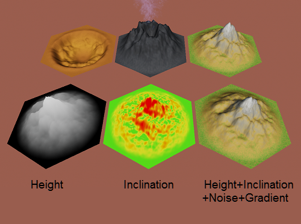

Work Projects:
- Contracted by the economic research and consulting company Prognos AG to completely rewrite and extend their energy market model. The agent-based model simulates the long term development of energy prices, power plant scheduling and co2 emissions in the european energy market. This has been my main project for the past years.
- Developing multiple Add-Ins for Powerpoint and Excel.
- Various small consulting projects about topics intersecting the energy market and software development (e.g. risk assessment of IoT devices and smart-charging electric cars for the energy grid; potential benefits and issues of using blockchain in the energy market).
- Planning and administration of the amateur tournaments with ~1000 participants at the Dreamhack Germany LANs 2017-2019 together with a small team.
- Setting up livestreams for various presentations, panel discussions and other events.
Personal Unity Side Projects (Warning: features programmer art!):
Hexagonal Map Library:
https://aurelwu.github.io/
A fully documented library for Unity which makes working with hexagonal maps effortless and intuitive. Includes support for tiles,edges and corners as well as periodic maps.
You can also find a WebGL Demo of some features/applications in its obsolete predecessor version.
https://aurelwu.itch.io/hexgrid-simplified/
Procedural Hexagonal Mesh Generator [WIP]:
some unfinished experiments with procedural generation and ShaderGraph

Numberbrick (Game Prototype):
https://aurelwu.itch.io/numberbrick/
A puzzle game in which you have to place and rotate shapes to form a contiguous are connecting specific tiles while maximising your score.
Smart Paths (Game Prototype):
https://aurelwu.itch.io/smart-paths/
A puzzle game in which you have to connect nodes of the same color in an efficient way : picking short paths, picking the right types of lines and avoiding multiple colors on 1 line.
Collapsing Space (Game Jam Entry):
https://aurelwu.itch.io/collapsing-space/
A word typing game a friend and me created during LD 42.
Tourism&Magic (Game Prototype WIP):
A multiplayer turnbased strategy game in which players expand on an island and get points based on the adjacent terrain and buildings of these buildings. Some of those buildings have special board-altering abilities.